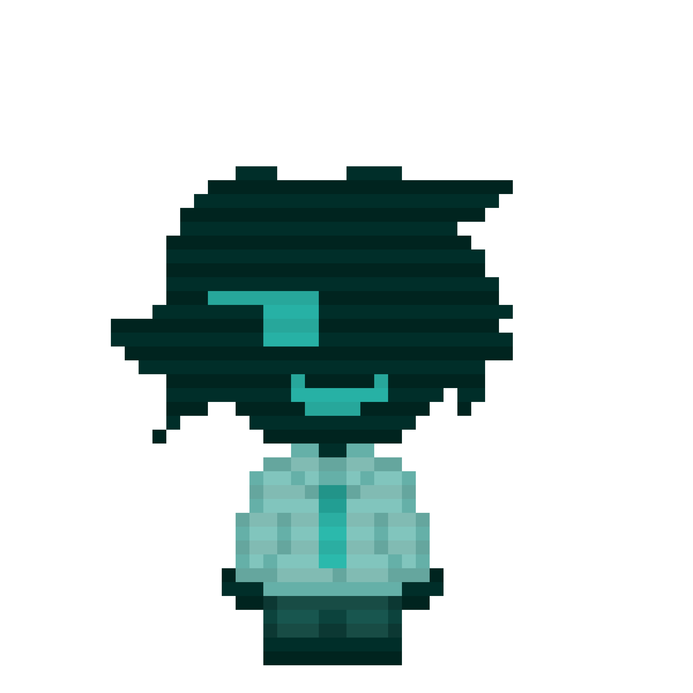
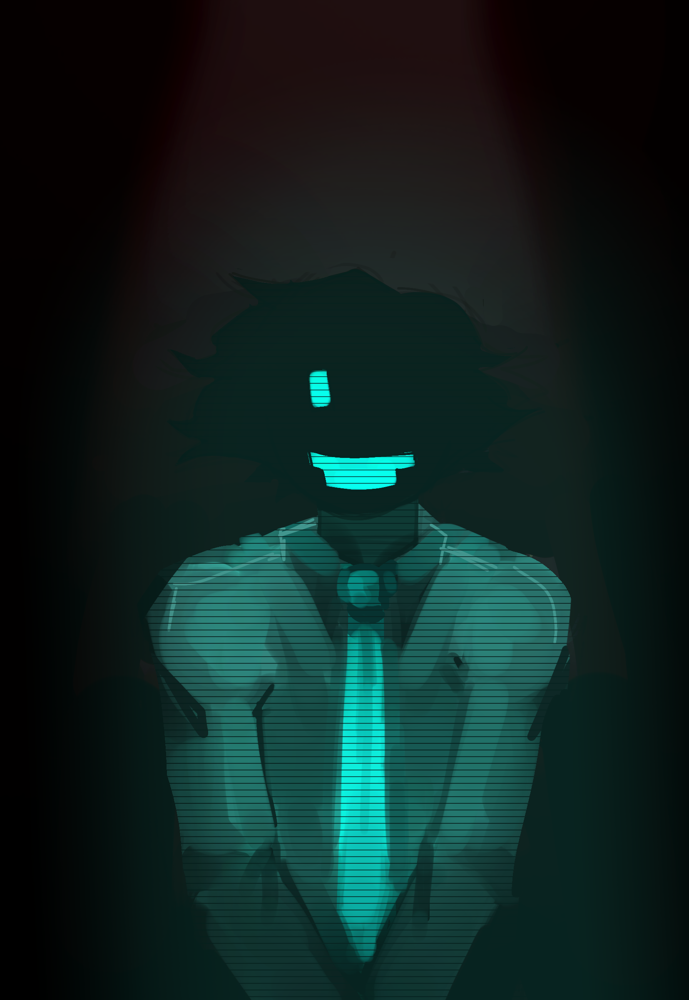
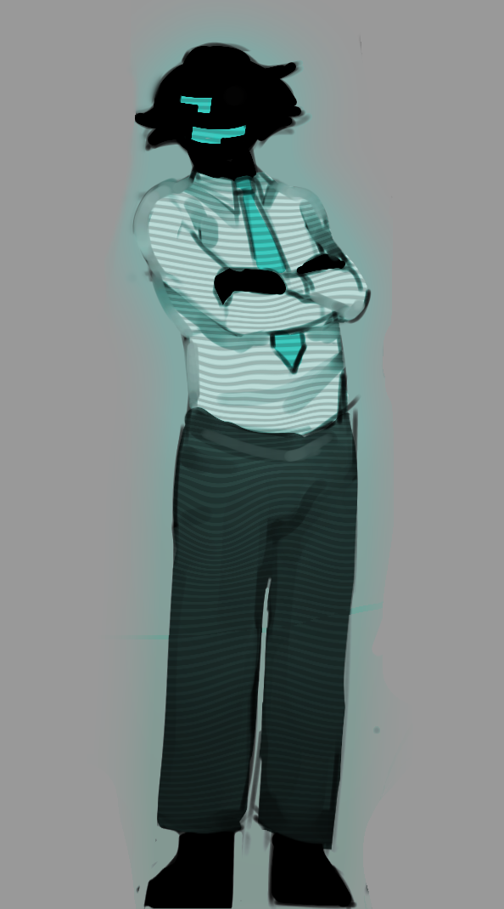
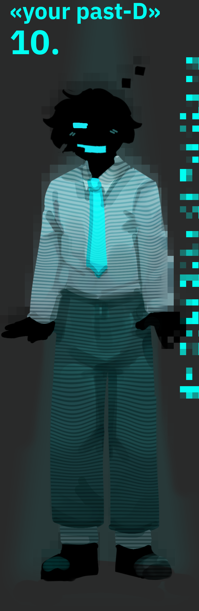
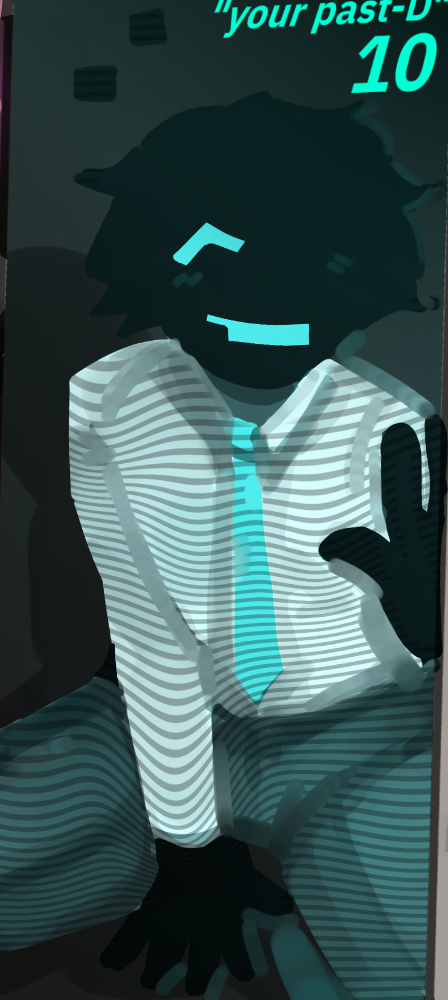

:/ДЕЛО 10
:/ДЕЛО 10

|
:/ДЕЛО 10
 |
|
 :D |
поддельная копия, созданная [rx_iris]. является в ирисверсе на данный момент как оператор по телефону,
соединяющий людей. должен был иметь физическое тело, но является всего лишь искусственным интеллектом,
живущим полностью заняв 1 компьютер [rx_iris], имея даже голограмму. его личность создана по старым скопированным воспоминаниям [rx_iris],
паста можно считать 19-летней версией [rx_iris], просто находясь в других ситуациях, вернее... оказавшись в нигде, осознавая, что ты компьютер.
история: [rx_iris] нашёл в нигде сломанное пространство за одним из стеллажей, где, если пройти через стену, можно выпасть в бесконечную пропасть, так что это являлось пределами нигде. здесь он решил создать другое пространство, за которым никто не сможет следить. так и появилась комната за пределами нигде, где хранятся все важные вещи как: несколько компьютеров, сервера, наработки, чертежи и всплывающие окна посреди комнаты. здесь и хранятся технические вещи во всём нигде, так что можно было начинать такие проекты, как "запасной выход". точнее, паст. но на данный момент проект приостановлен на неопределенный срок, и паст всё ещё является неким помощником, другом и советчиком [rx_iris]. он довольно свободен от работы, главной его задачей является уведомление оригинала о найденной в других мирах копии и по возможности изучение всех его данных, удерживание копий друг от друга на расстоянии, при этом не позволять им контактировать друг с другом, как можно сильнее мешать этому. |
факты:
- главное звено проекта "запасной выход".
- периодически он чистит память сам себе, неизвестно из-за чего. по всей видимости, скрывая что-то от [rx_iris]... хотя чисткой памяти паста занимается как раз оригинал, для удобства и потому, что он его создатель
:/ галерея

